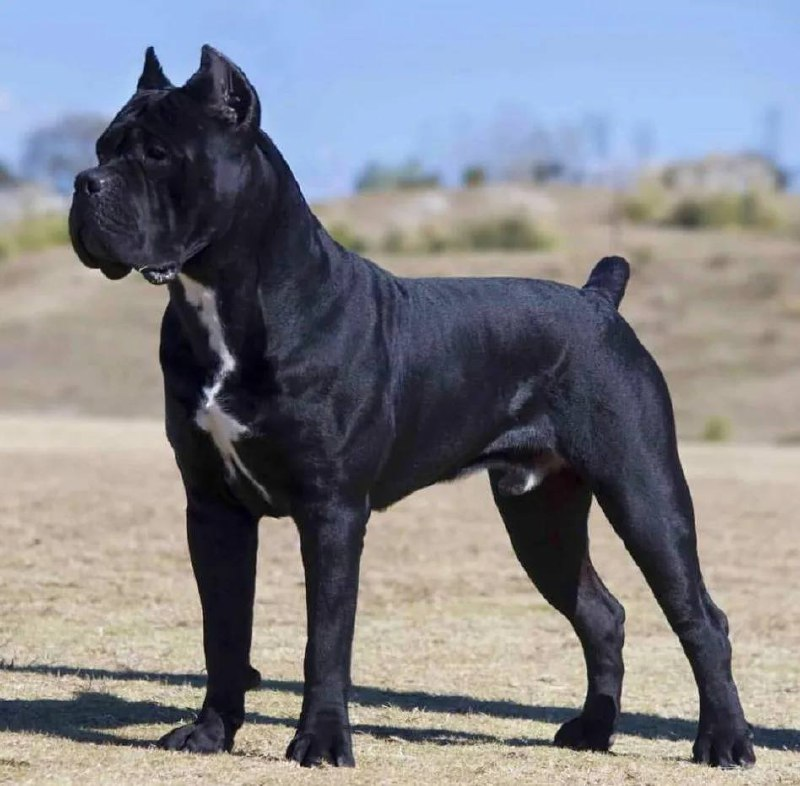

Кане-корсо

Происхождение: Италия
Размер: Крупные (рост: 60–68 см, вес: 40–50 кг)
Характер: Преданные, умные, доминантные
Особенности: Отличные телохранители, но требуют дрессировки. Короткая шерсть – уход минимален. Любят детей, но контролируют незнакомцев
Здоровье: Дисплазия, заворот века